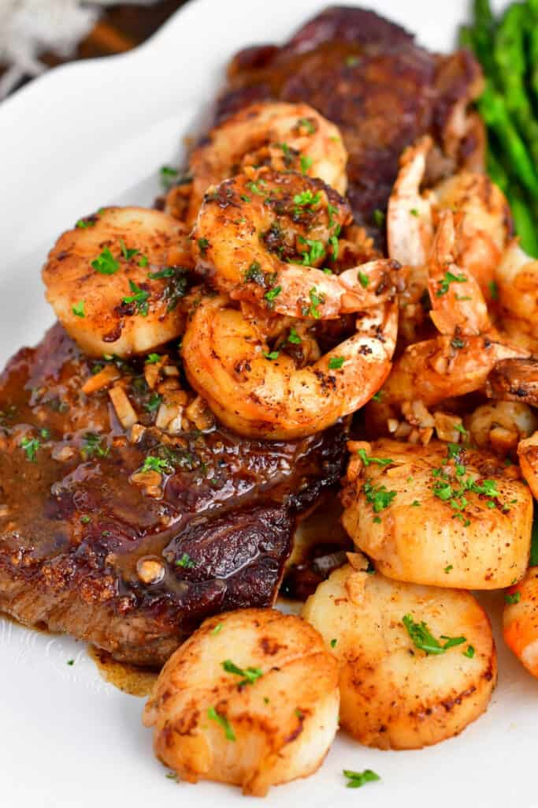

Surf and Turf

Description
This surf and turf recipe is a perfect combination of the juicy, pan-seared steak with sautéed shrimp and scallops in a buttery garlic sauce. This dish is very easy to make and will take only about 20 minutes to cook. It’s a great dinner for a special night!
Ingredients
Steaks:
- 2 NY Strip Steaks
- 1 tbsp canola oil
- 2 tbsp unsalted butter
- sea salt
- fresh cracked black pepper
Seafood
- 1/2 lb large shrimp
- 1/2 lb sea scallops
- 2 tbsp unsalted butter
- sea salt
- fresh cracked black pepper
- 4 garlic cloves
- 1/2 cup white wine
- 1 tbsp fresh squeezed lemon juice
- fresh minced parsley
Steps
Prepare the meats:
- Take the steaks out of the refrigerator about 30-45 minutes before cooking.
- When ready to start cooking, pat each steak dry with a paper towel all around.
- Clean and de-vein the shrimp.
- Pat the scallops dry with a paper towel. When ready to cook, season shrimp and scallops with some salt and pepper all around.
Pan Seared Steaks:
- Preheat a cast iron skillet over medium-high heat until completely hot (give it a few minutes).
- Season steaks generously with salt and pepper on all the sides. (Pat it dry before seasoning again, if needed.)
- Add oil to the pan and spread it around.
- Add steaks and let them cook for 3-4 minutes, undisturbed. Flip the steaks with metal tongs and add butter. Sear steaks for another 3-4 minutes on the other side, also undisturbed. Once butter is melted, baste the steaks with melted butter as it cooks.
- Check temperature of the steaks* and cook more if needed. Lower temrpature to medium.
- Flip the steaks to the other side and cook it for another minute before flipping again. Keep cooking and flipping every about every minute until they are cooked to the desired temperature. Use a digital meat thermometer to measure for the desired doneness.
- Once the steaks have reached the desired temperature, take them out right away. Set aside on the plate, loosely tent with a sheet of aluminum foil, and let them rest while seafood is cooking.
To Cook Seafood:
- If there was excess juices from cooking the steaks, pour some of them off but don't scrape the pan. Just the juices. Raise the temperature back to medium-high.
- Add butter to the pan and add seafood in one layer, don't overlap. Do not move or touch until ready to flip.
- Sear scallops and shrimp for about 2 minutes (a few seconds more or a few seconds less depending on the size).
- Flip each scallop and shrimp in the same order as you put them in. Let them sear for another 1.5-2 minutes and take them out of the pan.
- Add minced garlic and let it cook until fragrant and pour in white wine. Let it simmer until reduced some.
- Add lemon juices, stir well, and add back scallops and shrimp. Sprinkle some minced parsley, toss it around, and then plate with the steaks. Make sure to use some of the sauce left in the pan and pour it over the steak and seafood.